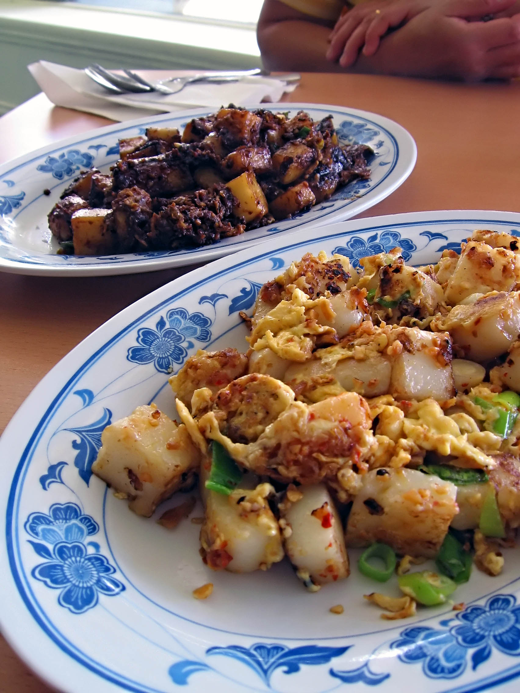

Carrot Cake Recipe

Description
This is a recipe for Chinese Carrot Cake. In colloquial terms, it is known as "Chai Tow Kway"
Ingredients
- Radish Cake
- Eggs
- Preserved Radish
Steps
- Bring 480 gr water to a boil. Add daikon and lower the heat to simmer and cover and cook for 5 minutes until daikon is soft. Take the daikon out. Measure out 480 gr of liquid and discard the rest
- While daikon is cooking, mix rice flour, cornstarch, tapioca starch, salt with 220 gr of water in a large wok or skillet.
- Stir until you get a smooth batter. Don’t turn on the heat yet. We’re still waiting for the daikon to cook
Home